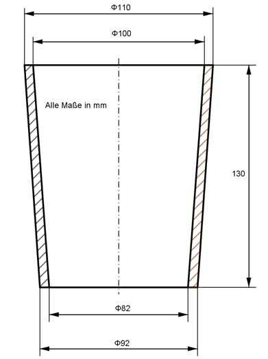

Aufgabe 292 Welche Höhe h muss eine Kunststoffscheibe mit einem Durchmesser von 50 mm haben, damit daraus die Buchse gepresst werden kann?  VScheibe = VBuchse Volumen der Buchse = Kegelstumpf K1 - Kegelstumpf K2 л * h K1 = -------- * (r1² + r1 * r2 + r2²) 3 r1 = 110 mm/2 = 55 mm r2 = 92 mm/2 = 46 mm л * 130 K1 = ---------- * (55² + 55 * 46 + 46²) mm³ 3 л * 130 K1 = ---------- * (3 025 + 2 530 + 2 116) mm³ 3 K1 = 1 043 767 mm³ л * h K2 = -------- * (r3² + r3 * r4 + r4²) 3 r3 = 100 mm/2 = 50 mm r4 = 82 mm/2 = 41 mm л * 130 K2 = ----------- * (50² + 50 * 41 + 41²) mm³ 3 л * 130 K2 = --------- * (2 500 + 2 050 + 1 681) mm³ 3 K2 = 847 831 mm³ VBuchse = 1 043 767 mm³ - 847 831 mm³ = 195 936 mm³ VScheibe = л * r² * h |:( л * r²) r = 50 mm/2 = 25 mm VScheibe 195 936 mm³ h = ----------- = --------------- = 99,8 mm л * r² л * 25² mm²